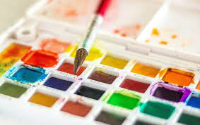
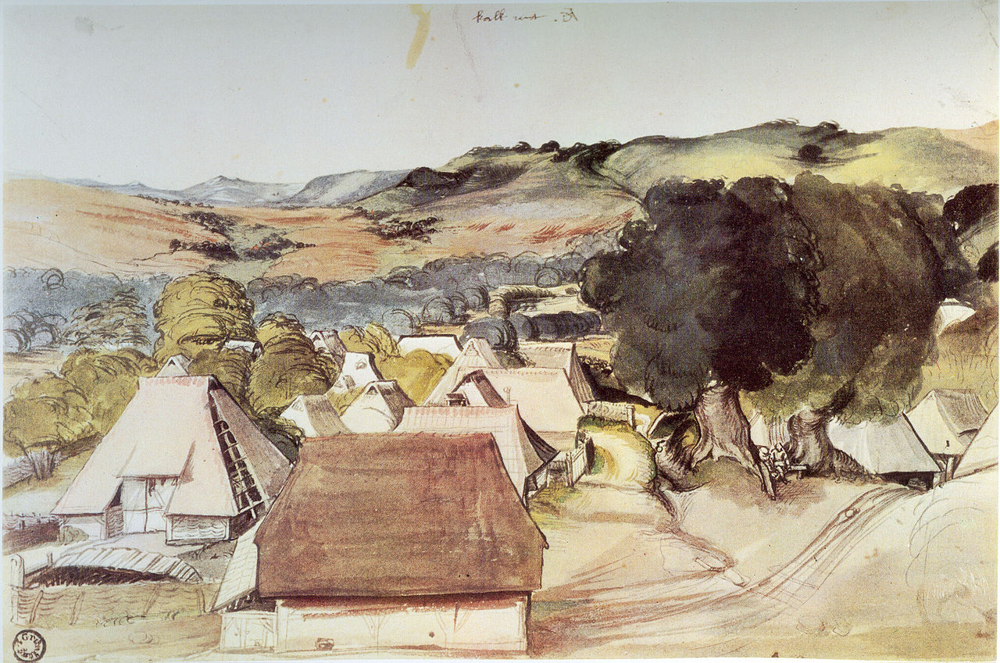
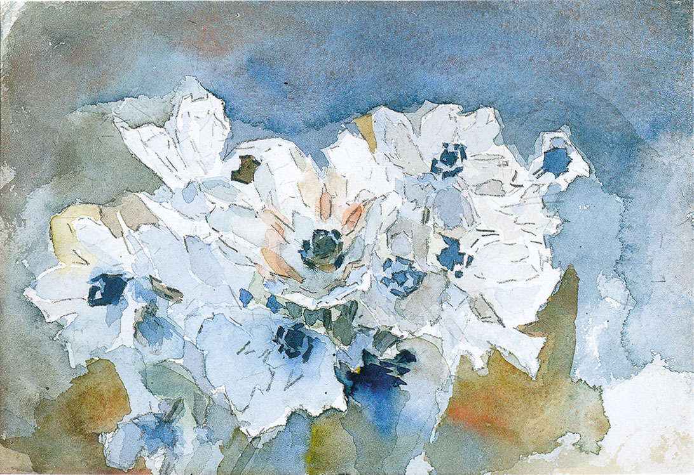

Акваре́ль (фр. aquarelle «водянистая» ← итал. acquarello) — техника изображения и разновидность изобразительного искусства, занимающая переходное положение между
живописью и графикой, совмещая их особенности (такие, как богатство тона, построение формы и пространства цветом, и активную роль белого фона бумаги в построении
изображения, отсутствие специфической рельефности мазка, характерной для живописи темперой, гуашью или маслом). читать далее.
История

Краски на водной основе известны с древнейших времен. Акварелью исполнены цветные рисунки на древнеегипетских папирусах. Ею рисовали этруски и римляне — предположительно
акварелью расписывались стены римских катакомб в начале нашей эры. Ранняя китайская живопись выполнялась одной чёрной тушью, при этом художники достигали широкого
спектра оттенков от густо-чёрного до серебристо-серого (пейзаж и жанровые композиции — среди них наиболее популярными были сюжеты из городской жизни — эпохи Сун). В Средние
века (Европа, Русь) акварель использовалась для иллюминирования рукописей (миниатюры, маргинальные декоративные элементы, буквицы) в том числе и в сочетании с гуашью.
При этом миниатюра являлась неотъемлемой частью собственно свитка (манускрипта, книги), представляющего собой цельное произведение, которая сопровождает текст и
способствует более полному его пониманию. читать далее.
Акварель в России

"Врубель. Цветы"
Английская традиция акварели оказала сильное влияние на русских художников, прежде всего тех, кто был связан с императорской Академией художеств, находившейся в
столице империи — Санкт-Петербурге. Первое имя в летописи русской акварели, которое по праву зачинателя и уровню мастерства необходимо назвать — Петр Фёдорович
Соколов (1791—1848). Он исполнял портреты, сцены охоты, жанры, запечатлев лик своей эпохи и своих современников. читать далее.
Советы для начинающих
Используйте качественные материалы
Следите за прозрачностью акварельных слоев
Не смешивайте акварель с белилами
Аккуратно используйте роющие краски
Не пишите светлыми отенками по темным
Не смешивайте большое количество цветов в один замес